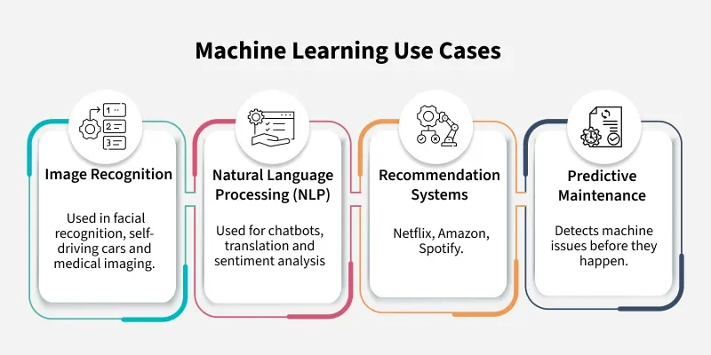

Explore The Canvas
The Canvas International School set its foot in the space of the education sector in April 2016. Since then, best pre school in India has ventured into several states of the country currently, it has more than 50 franchises, with over 4000 children learning their first lessons from the school that offers the best environment.
Our philsophy
We believe "If the foundation is strong; the building is bound to be strong". This holds true in terms of early childhood development as well. With apt resources, time and effort, we wish to create an ideal childhood paved with smiles and laughter. We admire the innocence children have. We wish to create a new world for our children. A world that allows them to explore the beauty and experience the joy around them, while providing them comfort and warmth. By combining both ideals of nature and nurture, we wish to create an empty Canvas for kids to fill in with their wonderful imagination. We believe this self-expression will mould their identity. By encouraging our children to be creative by singing, dancing and playing, we open their minds to a world of possibilities and hope for their succe
Our Speciality
Canvas is an exemplary preschool situated in multiple regions in Rajasthan, Madhya Pradesh, Maharashtra, and Delhi. We are proud to educate about 4000+ children varying from 18 months to 5.5 years of age. We take special care of each and every child, and create a path filled with fun and learning to help in your little ones' transition to formal schooling. Canvas has a close-knit staff whose only goal is your child's positive growth. This group of lively people includes experienced teachers/mentors, grooming staff, subject experts, support staff and a central support team. Using our collective experience, we have created a unique model which imparts all basic skills and the development your children needs in order to be a successful member of the society. We believe schooling should be full of smiles and laughter and not quietness and boredom. We encourage our young ones to play, dance, sing, and have fun while they learn important lessons that can truly change their life. We just don't teach children; we create a unique environment, where children can explore life and the many fun adventures that happen every day.
About Us
About Us Our Philosophy is reflected in our name CANVAS. C - Creative Excellence - Creative and holistic development of the child. A - Acceptance - Acceptance of child as the way he or she is. N - Novelty - New and fresh methodologies to teach children. V - Visual Impact - Visual and interactive communication with children. A - Assurance - Assurance to parents that their children would learn and have fun in school. S - Safety - Safe and Secure learning environment for children to grow. Canvas is an exemplary preschool situated in multiple regions in Rajasthan, Madhya Pradesh, Maharashtra, and Delhi. We are proud to educate about 4000+ children varying from 18 months to 5.5 years of age. We take special care of each and every child, and create a path filled with fun and learning to help in your little ones' transition to formal schooling. Canvas has a close-knit staff whose only goal is your child's positive growth. This group of lively people includes experienced teachers/mentors, grooming staff, subject experts, support staff and a central support team. Using our collective experience, we have created a unique model which imparts all basic skills and the development your children needs in order to be a successful member of the society. We believe schooling should be full of smiles and laughter and not quietness and boredom. We encourage our young ones to play, dance, sing, and have fun while they learn important lessons that can truly change their life. We just don't teach children; we create a unique environment, where children can explore life and the many fun adventures that happen every day.
Machine Learning Tutorials
Machine learning is a branch of Artificial Intelligence that focuses on developing models and algorithms that let computers learn from data without being explicitly programmed for every task. In simple words, ML teaches the systems to think and understand like humans by learning from the data.
